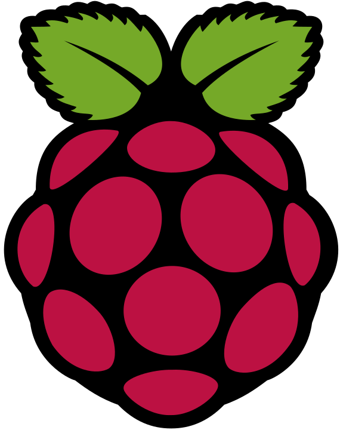

Pi-hole Installation: Das DNS-Sinkhole für ein werbefreies Netz
27.04.2026
Installation von Pi-hole:
In diesem Beitrag zeige ich dir die Installation von Pi-hole, die Einbindung einer leistungsstarken Blockliste und wie wir nebenbei noch den Speicher für Backup-Aufgaben vorbereiten. Somit können wir nun auch endlich Geräte, die keine Installation von Werbeblockern zulassen, effektiv von Werbung abschirmen, das Tracking der Websiten verhindern und durch die geringere Menge an abgerufenen Werbeseiten auch noch Daten sparen. Dies erhöht die Geschwindigkeit des Seitenaufbaus und hilft auch beim Kostenmanagement in Datenspar-Tarifen.